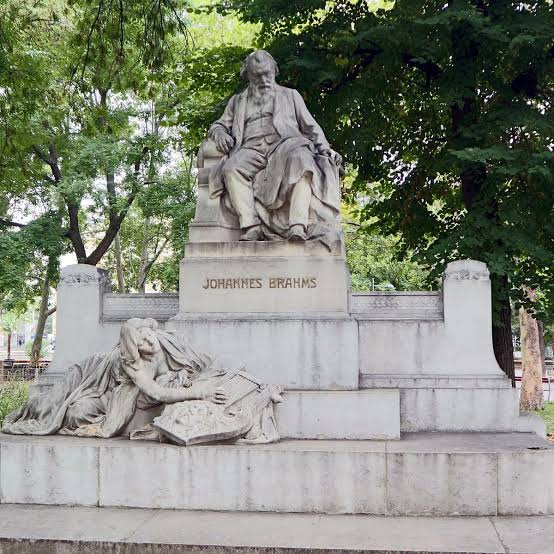

Биография Иоганнеса Брамса
 Иоганнес Брамс в зрелом возрасте
Иоганнес Брамс в зрелом возрастеИоганнес Брамс — немецкий композитор, пианист и дирижёр XIX века. Он родился 7 мая 1833 года в Гамбурге и стал одним из крупнейших немецких композиторов романтической эпохи.
Детство и начало музыкального пути
Отец Брамса был музыкантом и рано заметил способности сына. Иоганнес учился игре на фортепиано и начал писать музыку в раннем возрасте, исполняя свои первые произведения в кругу семьи и друзей.
 Молодой Брамс
Молодой БрамсЗнакомство с семьёй Шуманов
В 1853 году Брамс познакомился с Робертом и Кларой Шуман. Роберт высоко оценил талант молодого композитора и поддержал его, помогая выйти в мировую музыкальную среду.
Вена и последние годы
 Брамс в поздние годы
Брамс в поздние годыС 1860-х годов Брамс часто жил и работал в Вене. Он сочинял симфонии, концерты, камерную и вокальную музыку, а также был известен как великий пианист и дирижёр.
Сочинения, песни и стихи
Брамс писал музыку почти во всех основных жанрах, кроме оперы: симфонии, концерты, камерные произведения, песни и хоровые сочинения.
 Исторический портрет композитора
Исторический портрет композитораИзвестные произведения
- Четыре симфонии: № 1 до минор, № 2 ре мажор, № 3 фа мажор и № 4 ми минор.
- «Немецкий реквием» — крупное произведение для хора, солистов и оркестра.
- «Венгерские танцы» — цикл из 21 танца.
- «Колыбельная» (Wiegenlied, Op. 49 № 4) — одна из самых известных песен Брамса.
Аудиозаписи произведений Брамса
Нажмите кнопку воспроизведения. Аудиофайлы хранятся вместе с этой страницей в репозитории.
 Дом, связанный с жизнью композитора
Дом, связанный с жизнью композитора1. Венгерский танец № 1 соль минор
Оркестровая версия.
2. Колыбельная (Wiegenlied, Op. 49 № 4)
Нежная и узнаваемая мелодия.
3. Венгерский танец № 5
Один из наиболее известных танцев цикла.
Видео о Иоганнесе Брамсе
Интересные факты и фотографии
Несколько фактов о композиторе и его времени:
- Брамс любил долгие прогулки и часто обдумывал музыку во время ходьбы.
- Он был требовательным к своим произведениям и нередко уничтожал ранние наброски.
- Брамс никогда не был женат, но сохранял близкую дружбу с Кларой Шуман.
- «Венгерские танцы» принесли композитору широкую популярность.

Портрет Иоганнеса Брамса Фотопортрет БрамсаБрамс в поздние годы
Фотопортрет БрамсаБрамс в поздние годы